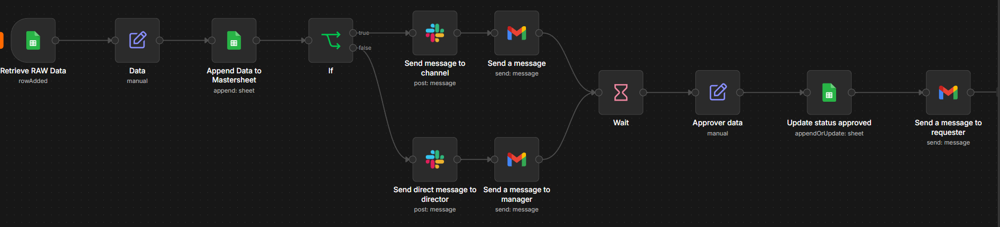

WORKFLOW AUTOMATION
An automated expense management workflow that handles expense submissions, validation, approval routing, rejection, tracking, and employee notifications.
OVERVIEW
Expense requests often require multiple steps before they can be approved and recorded. Someone needs to review the submission, determine the appropriate approver, communicate the decision, and keep the expense tracker updated.
I designed this workflow to automate these steps while maintaining a centralized record of each expense request.
THE PROBLEM
A manual expense approval process can require employees and managers to repeatedly exchange emails, check information, update spreadsheets, and communicate approval decisions.
Without a consistent workflow, it can also become difficult to track the current status of each request.
THE WORKFLOW

An employee submits an expense request through a Google Form.
The workflow checks the submitted information before processing the request.
A unique Expense ID is generated so the request can be tracked throughout the workflow.
The expense information is recorded in the master Google Sheet.
The expense amount determines the appropriate approval path.
The designated approver receives the expense information and approval options.
The workflow processes either an approval or rejection response.
The expense record is updated and the employee is notified of the result.
APPROVAL ROUTING
The workflow can determine the appropriate approver based on the expense amount.
Expenses below the configured threshold are routed to the appropriate manager.
Higher-value expenses are routed to a department head for additional approval.
DECISION PROCESS
The workflow provides the approver with a clear way to approve or reject an expense request.
An approved request is recorded in the master tracker and the employee receives a notification confirming the decision.
A rejected request is recorded with the rejection information and the employee is notified of the decision.
WORKFLOW CONTROL
The workflow needs to pause while waiting for an approver to make a decision. A webhook-based approval mechanism allows the workflow to resume when the approver selects an available action.
This separates the initial expense submission from the eventual approval decision without requiring the entire process to be completed in a single interaction.
KEY FEATURES
Submitted information is checked before the request continues through the workflow.
Each request receives an identifier that can be used to track it throughout the process.
The expense amount determines the appropriate approval path.
Separate decision paths allow approved and rejected requests to be processed appropriately.
Expense information and status updates are stored in a master Google Sheet.
Employees receive an email when their expense request has been processed.
TOOLS
RESULT
The finished workflow creates a consistent process from expense submission through approval or rejection, while maintaining a centralized record of each request.
The project demonstrates how workflow automation can connect forms, spreadsheets, email, and webhooks to reduce repetitive administrative work and improve process visibility.